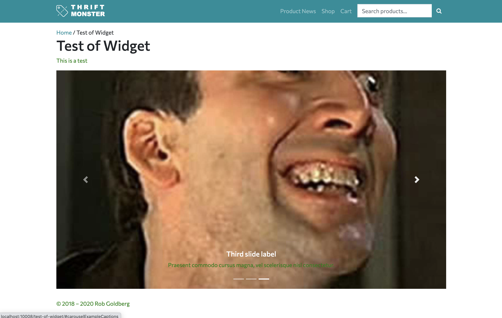

Code Samples for Week 9
Code Sample 9.1: Different Back-end Approaches
These samples show you how you can use both ACF the WordPress Widget API to code important back-end fields. Also included are two approaches for contact forms.
TASK 1: Adding a Widgetized Area to a Template
- Copy the following function into the end of your functions.php file in your child theme folder.
add_action( 'widgets_init', 'hero_simplified_page' );
function hero_simplified_page() {
$args = array(
'name' => 'Hero Area for Simplified Page',
'id' => 'hero-simplified',
'description' => 'This allows custom code - must use Simplified Page -- Widgetized template',
'class' => '',
'before_widget' => '',
'after_widget' => '',
'before_title' => '',
'after_title' => ''
);
register_sidebar( $args );
}
- Now go to Appearance > Widgets and over on the right on the side of the screen you will see your newly registered widget area.
- We need to call that widget area in our template, so I made a version of the simplified template for you below that includes this widget.
- Add that template to your page-templates folder and select it for a new page by choosing the page template name shown within the code below.
- Now you will see that the you have to GO BACK to Appearance > Widgets to populate this widget, which for this initial exercise I want you to populate via the Custom HTML widget with this snippet from way back in Exercise 2.2:
- https://raw.githubusercontent.com/robfromerd/digd417/master/week-2.2-exercise-solution.html – your task is to figure out how to paste in just the
div containing the Nicholas slidehow – hint it's the one with id containing the word carousel.
- When done, use the PUSH to WP Engine button to push the template up to your REMOTE site and then (if necessary), redo the content changes on REMOTE if not pushing the DB, and then send me the URL to the page on your REMOTE site.
- It should look like this:

- FINALLY, for NEXT WEEK, use REAL CONTENT in the widget area using locally pathed images to your child theme directory with the code like this
src="<?php echo get_stylesheet_directory_uri(); ?>/images/yourfilename.yourextension" instead of the images of Nicholas Cage. You do not have to use a slideshow but you do have to use some custom code that paths to image(s) in a folder in your child theme directory that you include in this way.
TASK 2: Using the ACF Options Page Functionality to Allow Google Fonts Choices
If you have the PRO version of the ACF plugin, you can make a Site Options page to store global custom values.
- Install the PRO version of the plugin by going to this Github page.
- We need to install this plugin by uploading a zip by going to the Dashboard > Plugins > Add New and then looking for a rectangular "Upload Plugin" button at the top of the screen.
- This way of adding a plugin expects a zip file.
- Activate the ACF Pro plugin.
- Now download this ZIP file of a custom plugin that I made that adds a custom Site Options field for you that allows you to load a Google Fonts stylesheet – add it and activate in the same way as above.
- Now you should see a Site Options choice in the Dashboard that will accept the URL part of a Google font embed (lecture will cover how to get just this part).
.
- Add a Google font to this field and then hop over to Appearance > Customizer and target all (*) elements or just some and then let me know a page where I can see this in action.
TASK 3: Including a Contact Form Without Using a Plugin and With Using a Plugin
There are many plugins to add front-end forms to a WordPress site and you can also custom code your own.
- For this assignment, use either the custom page template that I provide below or another plugin-based approach such as Contact Form 7 or Gravity Forms (your choice) to add a contact form to your website.
- If you use the template below, REMEMBER you must populate the email address in the
$to variable on line 57 where the code now says "some-email@someplace.whatever".
- Send yourself a test message from your form and then forward it to me to show me that you completed the assignment.
- If you use a plugin, read the plugin's documentation to make sure you understand how to set up the plugin to be able to send emails from your WordPress installation.